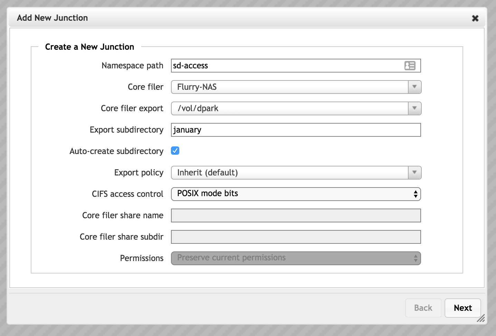

Configuring VServers and Global Namespace¶
Avere OS’s vservers are virtual fileservers that control how data flows between the client and the cluster’s core filers.
VServers manage vital functions in an Avere cluster:
- VServers host client-facing IP addresses
- VServers’ namespace junctions map the client-facing virtual directory structure to exports on the backend storage
- VServers enforce file access controls, including core filer export policies and user authentication systems
- VServers provide SMB infrastructure
Before starting to configure a cluster vserver, read the linked documentation and consult your Avere representative as needed to understand the structure of the Avere cluster’s file serving system.
These sections of the Cluster Configuration Guide will help you familiarize yourself with Avere OS’s vserver and global namespace features.
Creating a VServer¶
To create a new vserver, you will need the following information:
The name to set for the vserver
The range of client-facing IP addresses the vserver will handle
When creating a vserver you must supply a single range of contiguous IP addresses, but you can add more addresses later by using the Client Facing Network settings page.
If your network has VLANs, which VLAN to use
A cluster can have multiple vservers.
Use the VServer > Manage VServers settings page to create a new vserver.
Refer to VServer > Manage VServers in the Cluster Configuration Guide for complete information.

Creating a Junction¶
A junction maps the backend storage path to a client-visible namespace. You can use this system to simplify the path used in client mount points, and to scale capacity seamlessly because one virtual path can accommodate storage from multiple core filers.
{kind=link}
Refer to VServer > Namespace in the Cluster Configuration Guide for complete details about creating a namespace junction.

Configuring Export Rules¶
After you have both a vserver and a core filer, you should customize the export rules and export policies that control how clients can access files on the core filer exports.
First, use the VServer > Export Rules page to add new rules, to modify the default policy, or to create your own custom export policy.
Second, use the VServer > Export Policies page to apply the customized policy to your core filer’s exports when accessed through that vserver.
Read Controlling Access to Core Filer Exports in the Cluster Configuration Guide for details.